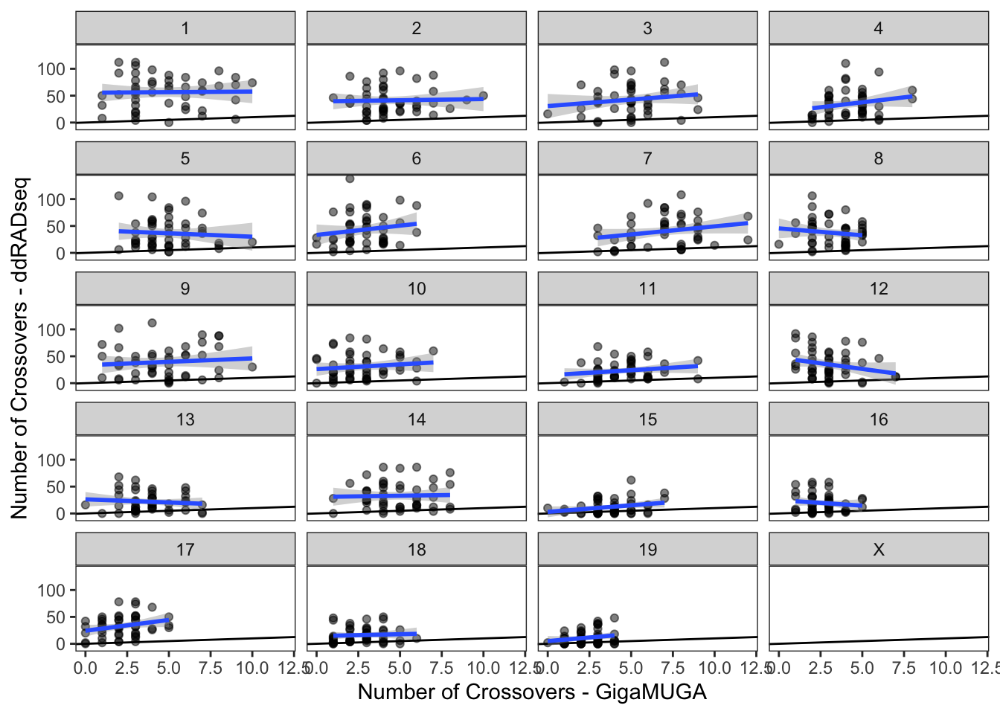
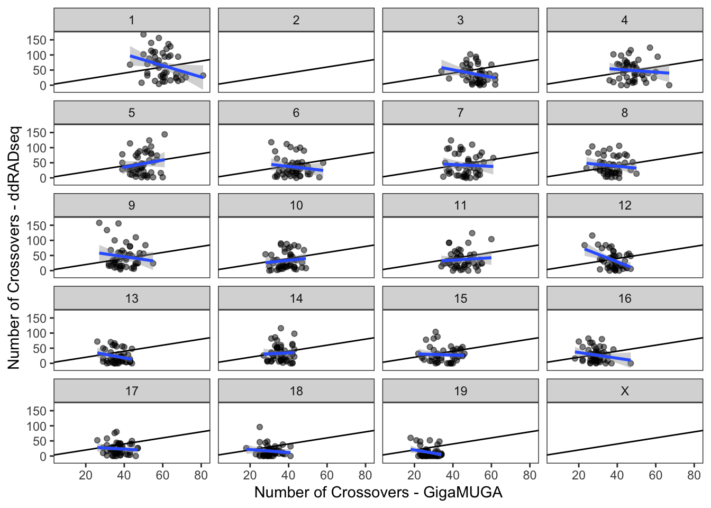
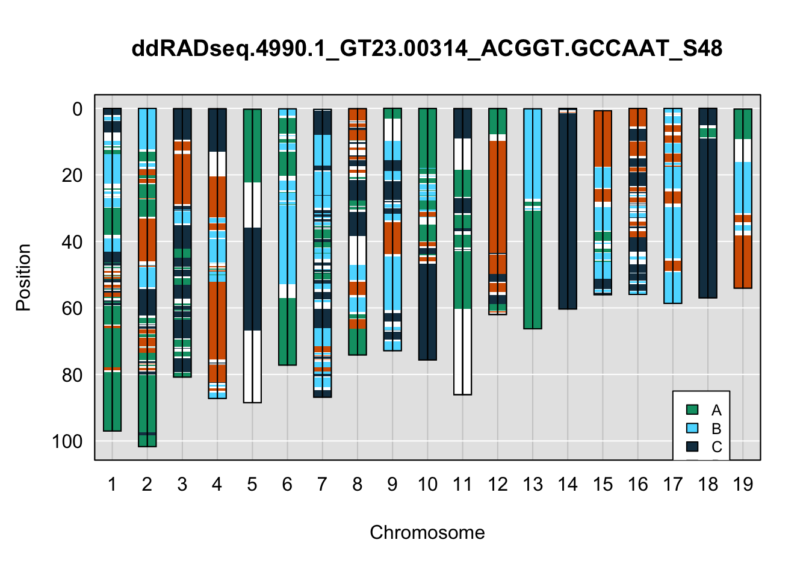
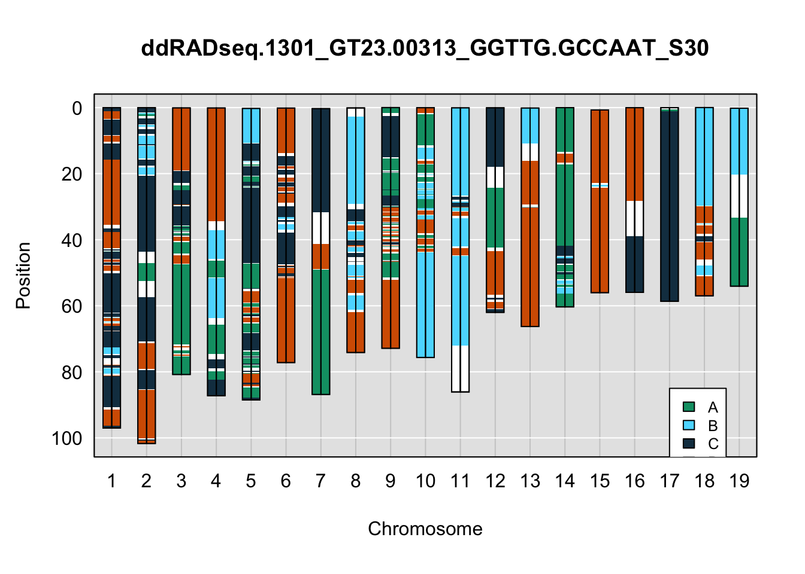
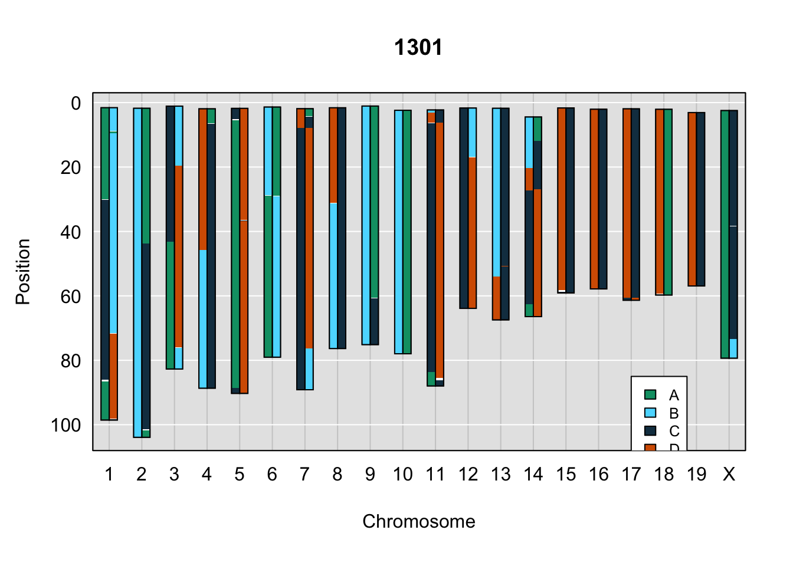
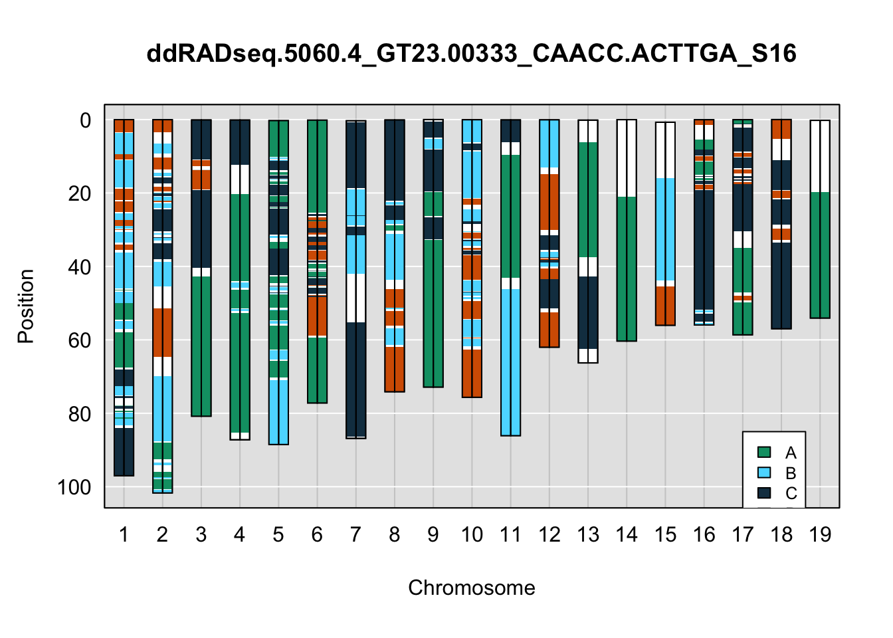
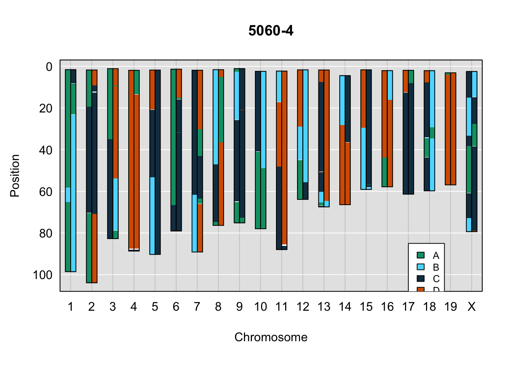
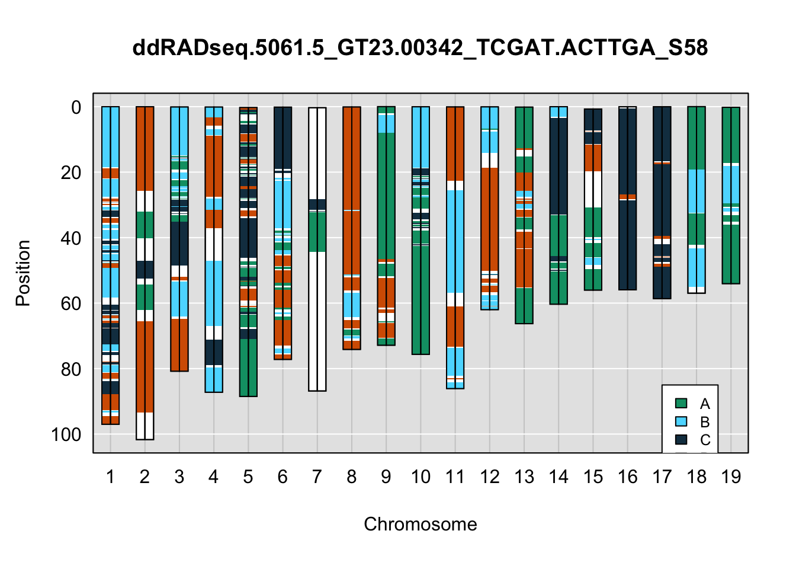
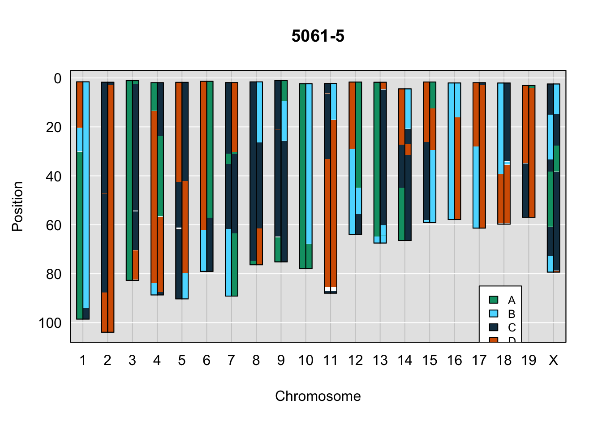

Haplotype Reconstruction with STITCH-Imputed Genotypes
Last updated: 2023-02-09
Checks: 7 0
Knit directory: lcGBS_wf/
This reproducible R Markdown analysis was created with workflowr (version 1.7.0). The Checks tab describes the reproducibility checks that were applied when the results were created. The Past versions tab lists the development history.
Great! Since the R Markdown file has been committed to the Git repository, you know the exact version of the code that produced these results.
Great job! The global environment was empty. Objects defined in the global environment can affect the analysis in your R Markdown file in unknown ways. For reproduciblity it’s best to always run the code in an empty environment.
The command set.seed(20230208) was run prior to running
the code in the R Markdown file. Setting a seed ensures that any results
that rely on randomness, e.g. subsampling or permutations, are
reproducible.
Great job! Recording the operating system, R version, and package versions is critical for reproducibility.
Nice! There were no cached chunks for this analysis, so you can be confident that you successfully produced the results during this run.
Great job! Using relative paths to the files within your workflowr project makes it easier to run your code on other machines.
Great! You are using Git for version control. Tracking code development and connecting the code version to the results is critical for reproducibility.
The results in this page were generated with repository version 24e377a. See the Past versions tab to see a history of the changes made to the R Markdown and HTML files.
Note that you need to be careful to ensure that all relevant files for
the analysis have been committed to Git prior to generating the results
(you can use wflow_publish or
wflow_git_commit). workflowr only checks the R Markdown
file, but you know if there are other scripts or data files that it
depends on. Below is the status of the Git repository when the results
were generated:
Ignored files:
Ignored: .Rhistory
Ignored: .Rproj.user/
Untracked files:
Untracked: .DS_Store
Untracked: Rplot001.png
Untracked: data/.DS_Store
Untracked: data/4Founders.deepVar.vcf.gz
Untracked: data/4Founders.deepVar.vcf.gz.tbi
Untracked: data/4WC_cross.RData
Untracked: data/4WC_genoprobs.RData
Untracked: data/4WC_maxmarg.RData
Untracked: data/DO_cross.RData
Untracked: data/DO_genoprobs.RData
Untracked: data/DO_maxmarg.RData
Untracked: data/Plate_Layouts.xlsx
Untracked: data/STITCH_data/
Untracked: data/Sample_information.xlsx
Untracked: data/gm_uwisc_v1.csv
Untracked: data/neogen/
Untracked: figures/
Untracked: output/.DS_Store
Untracked: output/plot_onegeno_ddRADseq.1301_GT23.00313_GGTTG.GCCAAT_S30.png
Untracked: output/plot_onegeno_ddRADseq.1314_GT23.00337_AAGGA.ACTTGA_S95.png
Untracked: output/plot_onegeno_ddRADseq.1320_GT23.00297_TCGAT.ACAGTG_S78.png
Untracked: output/plot_onegeno_ddRADseq.1328_GT23.00329_AGCTA.CAGATC_S3.png
Untracked: output/plot_onegeno_ddRADseq.1339_GT23.00321_ACTTC.CAGATC_S42.png
Untracked: output/plot_onegeno_ddRADseq.1342_GT23.00305_AACCA.ACAGTG_S71.png
Untracked: output/plot_onegeno_ddRADseq.4990.1_GT23.00314_ACGGT.GCCAAT_S48.png
Untracked: output/plot_onegeno_ddRADseq.4990.2_GT23.00315_AAGGA.GCCAAT_S39.png
Untracked: output/plot_onegeno_ddRADseq.4990.3_GT23.00316_AACCA.GCCAAT_S85.png
Untracked: output/plot_onegeno_ddRADseq.4990.4_GT23.00317_ACACA.GCCAAT_S27.png
Untracked: output/plot_onegeno_ddRADseq.4990.5_GT23.00318_AGCTA.GCCAAT_S29.png
Untracked: output/plot_onegeno_ddRADseq.4990.6_GT23.00319_CGATC.GCCAAT_S26.png
Untracked: output/plot_onegeno_ddRADseq.4990.7_GT23.00320_TCGAT.GCCAAT_S50.png
Untracked: output/plot_onegeno_ddRADseq.4991.1_GT23.00322_CAACC.CAGATC_S24.png
Untracked: output/plot_onegeno_ddRADseq.4991.2_GT23.00323_ATACG.CAGATC_S33.png
Untracked: output/plot_onegeno_ddRADseq.4991.3_GT23.00324_GGTTG.CAGATC_S75.png
Untracked: output/plot_onegeno_ddRADseq.4991.4_GT23.00325_ACGGT.CAGATC_S59.png
Untracked: output/plot_onegeno_ddRADseq.4991.5_GT23.00326_AAGGA.CAGATC_S84.png
Untracked: output/plot_onegeno_ddRADseq.4991.6_GT23.00327_AACCA.CAGATC_S53.png
Untracked: output/plot_onegeno_ddRADseq.4991.7_GT23.00328_ACACA.CAGATC_S87.png
Untracked: output/plot_onegeno_ddRADseq.5040.1_GT23.00298_GCATG.ACAGTG_S38.png
Untracked: output/plot_onegeno_ddRADseq.5040.2_GT23.00299_ACTTC.ACAGTG_S73.png
Untracked: output/plot_onegeno_ddRADseq.5040.3_GT23.00300_CAACC.ACAGTG_S61.png
Untracked: output/plot_onegeno_ddRADseq.5040.4_GT23.00301_ATACG.ACAGTG_S54.png
Untracked: output/plot_onegeno_ddRADseq.5040.5_GT23.00302_GGTTG.ACAGTG_S92.png
Untracked: output/plot_onegeno_ddRADseq.5040.6_GT23.00303_ACGGT.ACAGTG_S68.png
Untracked: output/plot_onegeno_ddRADseq.5040.7_GT23.00304_AAGGA.ACAGTG_S63.png
Untracked: output/plot_onegeno_ddRADseq.5041.1_GT23.00306_ACACA.ACAGTG_S65.png
Untracked: output/plot_onegeno_ddRADseq.5041.2_GT23.00307_AGCTA.ACAGTG_S56.png
Untracked: output/plot_onegeno_ddRADseq.5041.3_GT23.00308_CGATC.ACAGTG_S32.png
Untracked: output/plot_onegeno_ddRADseq.5041.4_GT23.00309_GCATG.GCCAAT_S18.png
Untracked: output/plot_onegeno_ddRADseq.5041.5_GT23.00310_ACTTC.GCCAAT_S57.png
Untracked: output/plot_onegeno_ddRADseq.5041.6_GT23.00311_CAACC.GCCAAT_S79.png
Untracked: output/plot_onegeno_ddRADseq.5041.7_GT23.00312_ATACG.GCCAAT_S36.png
Untracked: output/plot_onegeno_ddRADseq.5060.1_GT23.00330_CGATC.CAGATC_S55.png
Untracked: output/plot_onegeno_ddRADseq.5060.2_GT23.00331_TCGAT.CAGATC_S70.png
Untracked: output/plot_onegeno_ddRADseq.5060.3_GT23.00332_GCATG.CAGATC_S89.png
Untracked: output/plot_onegeno_ddRADseq.5060.4_GT23.00333_CAACC.ACTTGA_S16.png
Untracked: output/plot_onegeno_ddRADseq.5060.5_GT23.00334_ATACG.ACTTGA_S46.png
Untracked: output/plot_onegeno_ddRADseq.5060.6_GT23.00335_GGTTG.ACTTGA_S37.png
Untracked: output/plot_onegeno_ddRADseq.5060.7_GT23.00336_ACGGT.ACTTGA_S76.png
Untracked: output/plot_onegeno_ddRADseq.5061.1_GT23.00338_AACCA.ACTTGA_S7.png
Untracked: output/plot_onegeno_ddRADseq.5061.2_GT23.00339_ACACA.ACTTGA_S14.png
Untracked: output/plot_onegeno_ddRADseq.5061.3_GT23.00340_AGCTA.ACTTGA_S91.png
Untracked: output/plot_onegeno_ddRADseq.5061.4_GT23.00341_CGATC.ACTTGA_S81.png
Untracked: output/plot_onegeno_ddRADseq.5061.5_GT23.00342_TCGAT.ACTTGA_S58.png
Untracked: output/plot_onegeno_ddRADseq.5061.6_GT23.00343_GCATG.ACTTGA_S12.png
Untracked: output/plot_onegeno_ddRADseq.5061.7_GT23.00344_ACTTC.ACTTGA_S13.png
Untracked: plots/.DS_Store
Untracked: plots/plot_onegeno_ddRADseq.5041.3_GT23.00308_CGATC.ACAGTG_S32.png
Untracked: results/
Unstaged changes:
Deleted: .github/workflows/build_docker.yml
Deleted: code/README.md
Modified: data/4WC_covar.csv
Deleted: data/DO4WC_covar.csv
Deleted: data/DO4WC_forqtl2.json
Deleted: env/DO4WC_HR.Dockerfile
Deleted: env/DO_4WC.yml
Note that any generated files, e.g. HTML, png, CSS, etc., are not included in this status report because it is ok for generated content to have uncommitted changes.
These are the previous versions of the repository in which changes were
made to the R Markdown (analysis/HR_from_stitch.Rmd) and
HTML (docs/HR_from_stitch.html) files. If you’ve configured
a remote Git repository (see ?wflow_git_remote), click on
the hyperlinks in the table below to view the files as they were in that
past version.
| File | Version | Author | Date | Message |
|---|---|---|---|---|
| Rmd | d0fe610 | sam-widmayer | 2023-02-09 | update markdown with example haplotype plots for GM and ddRADseq sample comps |
| html | 84162cd | sam-widmayer | 2023-02-08 | render committed HR 4WC markdown |
| Rmd | 7eb0617 | sam-widmayer | 2023-02-08 | initiate workflowr site, starting with ddRADseq 4WC HR |
Overview
The goal of this preliminary analysis was to determine whether STITCH: 1) could provide us useful information and 2) whether this information could be translated or retrofitted for haplotype reconstruction in multiparent crosses
We built a Nextflow pipeline, stitch-nf, from the foundation of the NGS OPS WGS pipeline that runs STITCH on mouse samples that were submitted for low-coverage WGS. At the end of this pipeline, we extract 1) imputed sample genotypes and 2) prior probabilities for ancestral genotypes of latent haplotypes used for genotype imputation. These data can be conceptualized as “founder genotypes”
Four-way Cross ddRADseq Test Samples
Writing control file
# Establish chromosome vector
chr <- c(1:19)
# read in covariate file
metadata <- readr::read_csv(file = "data/4WC_covar.csv",
col_types = c(sample = "c",
generation = "n",
Sex = "c"),
show_col_types = T)Warning: The following named parsers don't match the column names: sample,
generationRows: 48 Columns: 7
── Column specification ────────────────────────────────────────────────────────
Delimiter: ","
chr (2): SampleID, Sex
dbl (5): Generation, A, B, C, D
ℹ Use `spec()` to retrieve the full column specification for this data.
ℹ Specify the column types or set `show_col_types = FALSE` to quiet this message.# match sample names to what is encoded in genotype files
geno_header <- c(as.character(readr::read_csv(file = "data/STITCH_data/4WC_ddRADseq/geno1.csv", col_names = F, skip = 3, n_max = 1)))[-1]Rows: 1 Columns: 49
── Column specification ────────────────────────────────────────────────────────
Delimiter: ","
chr (49): X1, X2, X3, X4, X5, X6, X7, X8, X9, X10, X11, X12, X13, X14, X15, ...
ℹ Use `spec()` to retrieve the full column specification for this data.
ℹ Specify the column types or set `show_col_types = FALSE` to quiet this message.new_sampleID <- c()
for(i in 1:length(metadata$SampleID)){
sample_index <- grep(geno_header, pattern = gsub(metadata$SampleID[i],
pattern = "-",
replacement = "."))
new_sampleID[i] <- geno_header[sample_index]
}
# Write updated metadata file
updated_4WC_metadata <- metadata %>%
dplyr::mutate(newSampID = new_sampleID) %>%
dplyr::select(-SampleID,-Sex) %>%
dplyr::select(newSampID, everything()) %>%
dplyr::rename(SampleID = newSampID)
write.csv(updated_4WC_metadata, file = "data/STITCH_data/4WC_ddRADseq/4WC_ddRADseq_crossinfo.csv", quote = F, row.names = F)
# Write updated metadata file
sex_4WC <- metadata %>%
dplyr::mutate(newSampID = new_sampleID) %>%
dplyr::select(newSampID, Sex) %>%
dplyr::rename(SampleID = newSampID)
write.csv(sex_4WC, file = "data/STITCH_data/4WC_ddRADseq/sex_4WC.csv", quote = F, row.names = F)
# Write control file
qtl2::write_control_file(output_file = "data/STITCH_data/4WC_ddRADseq/4WC_ddRADseq.json",
crosstype="genail4",
description="4WC_ddRADseq",
founder_geno_file=paste0("foundergeno", chr, ".csv"),
founder_geno_transposed=TRUE,
gmap_file=paste0("gmap", chr, ".csv"),
pmap_file=paste0("pmap", chr, ".csv"),
geno_file=paste0("geno", chr, ".csv"),
geno_transposed = TRUE,
geno_codes=list(A=1, H=2, B=3),
sex_file = "sex_4WC.csv",
sex_codes=list(F="Female", M="Male"),
# crossinfo_covar=c("Generation","A","B","C","D"),
crossinfo_file = "4WC_ddRADseq_crossinfo.csv",
overwrite = T)We load in the cross object, and determined the number of markers that are missing data in each sample. These data are from a small test run of ddRADseq libraries prepped by Lydia Wooldridge and the Dumont Lab.
Calculating missing genotypes
# Load in the cross object
ddRADseq_4WC <- qtl2::read_cross2("data/STITCH_data/4WC_ddRADseq/4WC_ddRADseq.json")
# Also loading in the cross object from GigaMUGA genotypes
load("data/4WC_cross.RData")
# Drop null markers
ddRADseq_4WC <- qtl2::drop_nullmarkers(ddRADseq_4WC)Dropping 62 markers with no data# Reordering genotypes so that most common allele in founders is first
for(chr in seq_along(ddRADseq_4WC$founder_geno)) {
fg <- ddRADseq_4WC$founder_geno[[chr]]
g <- ddRADseq_4WC$geno[[chr]]
f1 <- colSums(fg==1)/colSums(fg != 0)
fg[fg==0] <- NA
g[g==0] <- NA
fg[,f1 < 0.5] <- 4 - fg[,f1 < 0.5]
g[,f1 < 0.5] <- 4 - g[,f1 < 0.5]
fg[is.na(fg)] <- 0
g[is.na(g)] <- 0
ddRADseq_4WC$founder_geno[[chr]] <- fg
ddRADseq_4WC$geno[[chr]] <- g
}
# Calculate the percent of missing genotypes per sample
percent_missing <- qtl2::n_missing(ddRADseq_4WC, "ind", "prop")*100
missing_genos_df <- data.frame(names(percent_missing), percent_missing) %>%
`colnames<-`(c("sample","percent_missing"))
# Plot missing genotypes per sample
missing_genos_plot <- ggplot(data = missing_genos_df, mapping = aes(x = reorder(sample, percent_missing),
y = percent_missing)) +
theme_bw() +
geom_point(shape = 21) +
labs(title = "4WC Missing Genotypes") +
theme(legend.position = "bottom",
panel.grid = element_blank(),
axis.text.x = element_blank(),
axis.ticks.x = element_blank())
plotly::ggplotly(missing_genos_plot)percent_missing_cutoff <- 1048 sample(s) is/are missing data for greater than 10% of markers.
Sample duplicates
We next calculated whether, based on genotype information alone, samples appear to be duplicates. We estimated from GigaMUGA data that there are probably no duplicate samples.
# Determine if any samples are duplicates based on genetic similarity
cg <- qtl2::compare_geno(ddRADseq_4WC, cores=0)
qtl2::plot_compare_geno(x = cg, rug = T, main = "4WC - ddRADseq Data")
From the above plot, it would seem that the genotyping can’t distinguish certain samples from each other.
cgGM <- qtl2::compare_geno(X4WC_cross, cores=0)
qtl2::plot_compare_geno(x = cgGM, rug = T, main = "4WC - GigaMUGA Data")
These mice are F2/F3 individuals, so we expect that they retain a good deal of relatedness. We would hypothesize that due to the lower coverage of the ddRADseq genotyping that we miss areas of the genome that would distinguish individuals from each other.
Haplotype reconstruction
# Insert pseudomarkers
map <- qtl2::insert_pseudomarkers(ddRADseq_4WC$gmap, step = 1)
# Calculate genotype probs
dir.create("results/4WC_ddRADseq_pr")Warning in dir.create("results/4WC_ddRADseq_pr"): 'results/4WC_ddRADseq_pr'
already existsfpr <- suppressWarnings(qtl2fst::calc_genoprob_fst(cross = ddRADseq_4WC,
map = map,
fbase = "pr",
fdir = "results/4WC_ddRADseq_pr",
error_prob=0.002,
overwrite=TRUE,cores = parallel::detectCores()))
# Make viterbi
m <- maxmarg(fpr, minprob=0.5)
# Phase genotypes
ph <- qtl2::guess_phase(cross = ddRADseq_4WC, geno = m)
# Write Plots
X4WCcolors <- c(qtl2::CCcolors[6],
"#5ADBFF",
"#153B50",
qtl2::CCcolors[7])
names(X4WCcolors)[2:3] <- c("POHN","GOR")
for(i in 1:nrow(ddRADseq_4WC$cross_info)){
png(file=paste0("output/plot_onegeno_",rownames(ddRADseq_4WC$cross_info)[i],".png"))
qtl2::plot_onegeno(geno = ph,
map = map,
ind = i,
col = X4WCcolors) # add legends here
legend(17, 85,
legend=c("A", "B", "C", "D"),
fill=X4WCcolors, cex=0.8)
dev.off()
}Below are example chromosome paintings of haplotype reconstructions from ddRADseq samples compared to the same individiuals genotyped with GigaMUGA.
# GigaMUGA haplotypes
load("data/4WC_genoprobs.RData")
gm_m <- maxmarg(pr, minprob=0.5)
gm_ph <- qtl2::guess_phase(cross = X4WC_cross, geno = gm_m)
gm_map <- qtl2::insert_pseudomarkers(X4WC_cross$gmap, step = 1)
# Example plots
indivs <- sample(seq(1:nrow(ddRADseq_4WC$cross_info)), size = 5, replace = F)
# ddRADseq
plot_indiv <- rownames(ddRADseq_4WC$cross_info)[indivs[1]]
qtl2::plot_onegeno(geno = ph,
map = map,
ind = plot_indiv,
col = X4WCcolors,
main = plot_indiv) # add legends here
legend(17, 85, legend=c("A", "B", "C", "D"), fill=X4WCcolors, cex=0.8)
# DO
do_sample_index <- grep(pattern = gsub(strsplit(plot_indiv, split = "_")[[1]][1],
pattern = "ddRADseq.",
replacement = ""),
x = gsub(rownames(X4WC_cross$cross_info),
pattern = "-",
replacement = "."))
qtl2::plot_onegeno(geno = gm_ph,
map = gm_map,
ind = do_sample_index,
col = X4WCcolors,
main = rownames(X4WC_cross$cross_info)[do_sample_index]) # add legends here
legend(17, 85, legend=c("A", "B", "C", "D"), fill=X4WCcolors, cex=0.8)
plot_indiv <- rownames(ddRADseq_4WC$cross_info)[indivs[2]]
qtl2::plot_onegeno(geno = ph,
map = map,
ind = plot_indiv,
col = X4WCcolors,
main = plot_indiv) # add legends here
legend(17, 85, legend=c("A", "B", "C", "D"), fill=X4WCcolors, cex=0.8)
do_sample_index <- grep(pattern = gsub(strsplit(plot_indiv, split = "_")[[1]][1],
pattern = "ddRADseq.",
replacement = ""),
x = gsub(rownames(X4WC_cross$cross_info),
pattern = "-",
replacement = "."))
qtl2::plot_onegeno(geno = gm_ph,
map = gm_map,
ind = do_sample_index,
col = X4WCcolors,
main = rownames(X4WC_cross$cross_info)[do_sample_index]) # add legends here
legend(17, 85, legend=c("A", "B", "C", "D"), fill=X4WCcolors, cex=0.8)
plot_indiv <- rownames(ddRADseq_4WC$cross_info)[indivs[3]]
qtl2::plot_onegeno(geno = ph,
map = map,
ind = plot_indiv,
col = X4WCcolors,
main = plot_indiv) # add legends here
legend(17, 85, legend=c("A", "B", "C", "D"), fill=X4WCcolors, cex=0.8)
do_sample_index <- grep(pattern = gsub(strsplit(plot_indiv, split = "_")[[1]][1],
pattern = "ddRADseq.",
replacement = ""),
x = gsub(rownames(X4WC_cross$cross_info),
pattern = "-",
replacement = "."))
qtl2::plot_onegeno(geno = gm_ph,
map = gm_map,
ind = do_sample_index,
col = X4WCcolors,
main = rownames(X4WC_cross$cross_info)[do_sample_index]) # add legends here
legend(17, 85, legend=c("A", "B", "C", "D"), fill=X4WCcolors, cex=0.8)
plot_indiv <- rownames(ddRADseq_4WC$cross_info)[indivs[4]]
qtl2::plot_onegeno(geno = ph,
map = map,
ind = plot_indiv,
col = X4WCcolors,
main = plot_indiv) # add legends here
legend(17, 85, legend=c("A", "B", "C", "D"), fill=X4WCcolors, cex=0.8)
do_sample_index <- grep(pattern = gsub(strsplit(plot_indiv, split = "_")[[1]][1],
pattern = "ddRADseq.",
replacement = ""),
x = gsub(rownames(X4WC_cross$cross_info),
pattern = "-",
replacement = "."))
qtl2::plot_onegeno(geno = gm_ph,
map = gm_map,
ind = do_sample_index,
col = X4WCcolors,
main = rownames(X4WC_cross$cross_info)[do_sample_index]) # add legends here
legend(17, 85, legend=c("A", "B", "C", "D"), fill=X4WCcolors, cex=0.8)
plot_indiv <- rownames(ddRADseq_4WC$cross_info)[indivs[5]]
qtl2::plot_onegeno(geno = ph,
map = map,
ind = plot_indiv,
col = X4WCcolors,
main = plot_indiv) # add legends here
legend(17, 85, legend=c("A", "B", "C", "D"), fill=X4WCcolors, cex=0.8)
do_sample_index <- grep(pattern = gsub(strsplit(plot_indiv, split = "_")[[1]][1],
pattern = "ddRADseq.",
replacement = ""),
x = gsub(rownames(X4WC_cross$cross_info),
pattern = "-",
replacement = "."))
qtl2::plot_onegeno(geno = gm_ph,
map = gm_map,
ind = do_sample_index,
col = X4WCcolors,
main = rownames(X4WC_cross$cross_info)[do_sample_index]) # add legends here
legend(17, 85, legend=c("A", "B", "C", "D"), fill=X4WCcolors, cex=0.8)
A few things can be observed from these plots. First, the ddRADseq haplotypes reflect complete homozygosity, which is not possible for these mice. This is could be due to low coverage in these test runs; a lack of sequencing depth across sites will result in not enough data to call heterozygous sites confidently. The degree of missing genotypes across samples reflects this lack of depth.
Second, many of the haplotype identities are discordant between the GigaMUGA and ddRADseq samples at the same genomic sites. This could reflect the fact that the same ancestral haplotype that STITCH denotes as “A” is not the same as the haplotype derived from qtl2. We could work around this by supplying a smaller set of well-curated consensus genotypes. We haven’t tested whether including these data improve the functionality of STITCH for our purposes.
Diversity Outbred ddRADseq Test Samples
sessionInfo()R version 4.2.1 (2022-06-23)
Platform: x86_64-apple-darwin17.0 (64-bit)
Running under: macOS Big Sur ... 10.16
Matrix products: default
BLAS: /Library/Frameworks/R.framework/Versions/4.2/Resources/lib/libRblas.0.dylib
LAPACK: /Library/Frameworks/R.framework/Versions/4.2/Resources/lib/libRlapack.dylib
locale:
[1] en_US.UTF-8/en_US.UTF-8/en_US.UTF-8/C/en_US.UTF-8/en_US.UTF-8
attached base packages:
[1] stats graphics grDevices utils datasets methods base
other attached packages:
[1] fstcore_0.9.12 forcats_0.5.2 stringr_1.4.1 dplyr_1.0.10
[5] purrr_0.3.5 readr_2.1.3 tidyr_1.2.1 tibble_3.1.8
[9] ggplot2_3.4.0 tidyverse_1.3.2 qtl2fst_0.26 qtl2_0.28
[13] workflowr_1.7.0
loaded via a namespace (and not attached):
[1] fs_1.5.2 lubridate_1.9.0 bit64_4.0.5
[4] httr_1.4.4 rprojroot_2.0.3 tools_4.2.1
[7] backports_1.4.1 bslib_0.4.1 utf8_1.2.2
[10] R6_2.5.1 lazyeval_0.2.2 DBI_1.1.3
[13] colorspace_2.0-3 withr_2.5.0 tidyselect_1.2.0
[16] processx_3.8.0 bit_4.0.4 compiler_4.2.1
[19] git2r_0.30.1 cli_3.4.1 rvest_1.0.3
[22] xml2_1.3.3 plotly_4.10.1 labeling_0.4.2
[25] sass_0.4.2 scales_1.2.1 callr_3.7.3
[28] digest_0.6.30 rmarkdown_2.18 pkgconfig_2.0.3
[31] htmltools_0.5.3 fst_0.9.8 highr_0.9
[34] dbplyr_2.2.1 fastmap_1.1.0 htmlwidgets_1.5.4
[37] rlang_1.0.6 readxl_1.4.1 rstudioapi_0.14
[40] RSQLite_2.2.18 jquerylib_0.1.4 generics_0.1.3
[43] jsonlite_1.8.3 crosstalk_1.2.0 vroom_1.6.0
[46] googlesheets4_1.0.1 magrittr_2.0.3 Rcpp_1.0.9
[49] munsell_0.5.0 fansi_1.0.3 lifecycle_1.0.3
[52] stringi_1.7.8 whisker_0.4 yaml_2.3.6
[55] grid_4.2.1 blob_1.2.3 parallel_4.2.1
[58] promises_1.2.0.1 crayon_1.5.2 haven_2.5.1
[61] hms_1.1.2 knitr_1.40 ps_1.7.2
[64] pillar_1.8.1 reprex_2.0.2 glue_1.6.2
[67] evaluate_0.18 getPass_0.2-2 data.table_1.14.4
[70] modelr_0.1.10 vctrs_0.5.0 tzdb_0.3.0
[73] httpuv_1.6.6 cellranger_1.1.0 gtable_0.3.1
[76] assertthat_0.2.1 cachem_1.0.6 xfun_0.34
[79] broom_1.0.1 later_1.3.0 viridisLite_0.4.1
[82] googledrive_2.0.0 gargle_1.2.1 memoise_2.0.1
[85] timechange_0.1.1 ellipsis_0.3.2